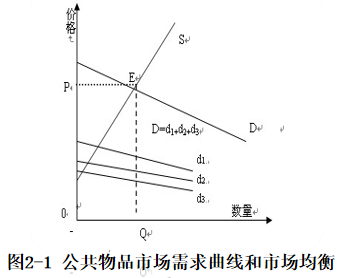

| 竞争性 | 非竞争性 | |
|---|---|---|
| 排他性 | 私人物品.如食物、衣服、汽车、理发、文具、住房等. | 俱乐部物品,如教育、影院、公园、图书馆、有限频道、高速路等. |
| 非排他性 | 公共资源,如地下水等水资源、草原、海鱼、森林、清洁空气等. | 纯公共物品,如国防、法律、空气污染治理、治安、天气预报等. |
*注:俱乐部物品与公共资源合称为准公共物品.
公共物品的特性,决定了公共物品的市场需求曲线的形式
准公共物品的特征是兼备公共物品和私人物品的性质.准公共物品有两种不同类型:
政府:两种提供方式何者为优？---依据效益和成本
科斯《经济学中的灯塔》
Coase R H. The Lighthouse in Economics [J]. Journal of Law and Economics, 1974, 17(2) : 357-76
美国乔治·梅森大学(George Mason)教授、布坎南政治经济学中心研究员泰勒•柯文(Tyler Cowen)曾对公共物品私人提供的可能性进行了多方面的阐述,并提出了值得人们思考和参照的见解.
Cowen T. Public goods definitions and their institutional context: a critique of public goods theory[J]. Review of Social Economy, 1985, 43(1): 53-63.
价格是经济主体行为的信号,也是实现最优资源配置的主要机制
公共定价是政府保证公共物品提供和实施公共物品管理的一项重要职责,公共定价的对象自然不仅包括国家机关和公共部门提供公共物品,而且包括私人部门提供的公共物品.
政府部门的管理状况的评价历来是一个难题,它们的潜在效率如同未知数X一样无法确定,所以,通常把财政支出的生产效率称为政府部门的X效率( X-efficiency).
Leibenstein H. Allocative Efficiency vs. “X-efficiency” [J]. The American Economic Review, 1966,56(3): pp.392-415.
社会经济的稳定与发展态势是社会资源有效配置,其中包括财政资源配置效率的综合结果,也是评价财政支出配置效率和生产效率的综合性指标.
所谓效益,就是人们在有目的的实践活动中“所费”和“所得”的对比关系,所谓提高经济效益,就是“少花钱、多办事、办好事”.
从原则上说,财政支出效益与微观经济主体的支出效益是一样的,但是,由于政府处于宏观调控主体的地位,支出项目在性质上也千差万别,同微观经济主体支出的效益又存在重大差别.
| 公共灌溉工程 | 直接效益 | 间接效益 |
|---|---|---|
| 有形效益 | 提高耕地单位产量,增加农民收入 | 促进水土保持,减少相应的支出 |
| 无形效益 | 改善当地生态环境,美化环境 | 有利于农村与农业社会的稳定 |
| 学校建设工程 | 直接效益 | 间接效益 |
|---|---|---|
| 有形效益 | 促进学生人力资本积累,增加其工作机会与收入 | 提高生产效率,减少培训成本,增加企业收益 |
| 无形效益 | 带动周边地区的经济社会教育发展 | 减少犯罪,有利于社会稳定 |
该分析法是将项目的受益收入与支出成本、经营成本相对比,用净收入和收入成本率来评价项目经济效益的一种方法,适用于项目发生的收益能用货币计量的情况.
假设一个项目的寿命为n年,第i年的折现率为ri,第I年的效益和成本分别为Bi 和Ci,,i=0,1,2,3,…n,则第i年的净收益为Bi-Ci.那么该项目的未来净效益的现值(NPV)为:
式中,Bi为第i年的的收益;Ci为第n年的成本,ri为第i年的贴现率,n为该项目使用年限.
对于不同项目进行选择是,则比较它们的NPV取值大小,同等条件下选择NPV高的项目.
影子价格
自来水和公交车等低价提供,不反应实际价值,应使用影子价格.
运用最低成本法来选择支出项目,其基本原理与成本－效益分析法大体相同,只是由于免去计算支出效益和无形成本的麻烦,操作程序要简化得多.
首先是根据已确定的建设目标提出几种备选方案；而后是分别计算各种备选方案的有形费用,如果是多年持续的支出项目,还要采取贴现法折算出“费用流”的现值；最后是按费用的高低排列顺序,供决策者选择.
詹姆斯·布坎南(1919-2013)
公共选择是政治上的观点,它从经济学家的工具和方法大量应用于集体或非市场决策而产生 ---James M.Buchanan
按照美国学者缪勒的说法,公共选择理论可以定义为非市场决策的研究,或简单地定义为将经济学运用到政治科学.
丹尼斯·C·缪勒著,韩旭、杨春学等译．公共选择理论(第3版)[M]．北京:中国社会科学出版社,2010
公共选择的主题与政治科学的主题是相同的,涉及国家理论、投票规则、投票者行为、政党政治、官僚机构等等 .
财政行政复议应遵循的原则
财政监督的内涵:指财政机关在财政管理过程中,依照国家有关法律法规,对国家机关、企事业单位及其他组织涉及财政收支事项及其他有关事项进行的审查、稽核与检查活动.
财政监督的地位和作用:监督主体:财政部门是主管国家预算编制和执行部门,各级财政部门是财政监督的主体.
监督范围:
流程 = 检查 -> 调查 -> 建议 -> 反映
检查:通过事中、事后的直接审阅、考证、稽核,确认监督对象执行财政、税务和会计等法纪情况的强制手段.
调查:通过检查发现重大问题线索,而后再进一步深入调查,弄清情况,进行分析研究,并提出检查报告.
建议:是检查与调查处理的自然延伸与必要补充
这里所说的建议指的是被检查对象存在不当行为,但尚未构成追究法律责任的程度,或者违法的直接责任人已受到查处,财政监督部门对受检查单位或它的上级主管机构提出纠正或补救性的建议.
由财政监督机构提出的专门建议,对接受单位来说具有一定的行政法律效力,负有履行的义务.
反映:指对于实施财政监督过程中认定的财税运行的重要情况及其已经或可能发生的影响,进行分析和综合,向决策层及时作出信息的反馈.
财政监督中的情况反映,既是财政监督工作升级的标志,也是扩展财政监督功能、加强经济宏观调控能力的客观需要.
财政监督的方式 = 日常监督检查 + 专项监督检查 + 个案检查
近年来中央财政根据财政管理的实际需要有针对性地开展财政监督工作,监督效果取得了突破性的进展.